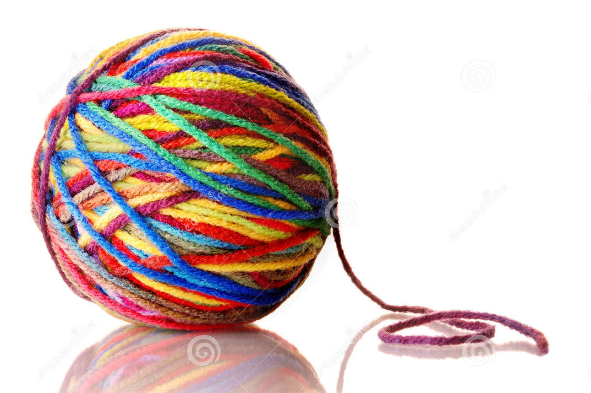
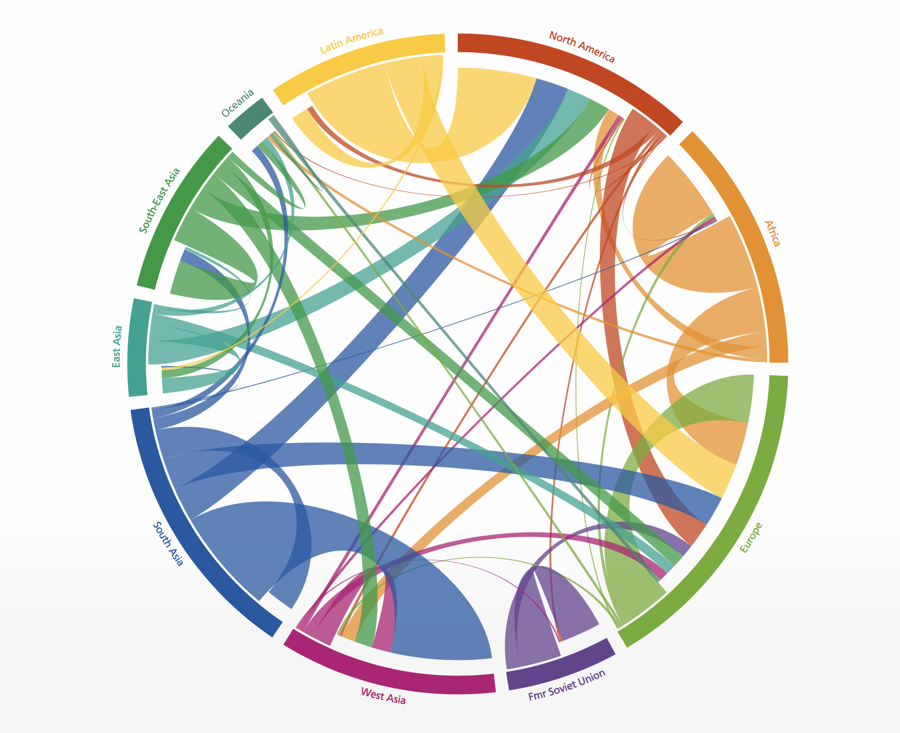
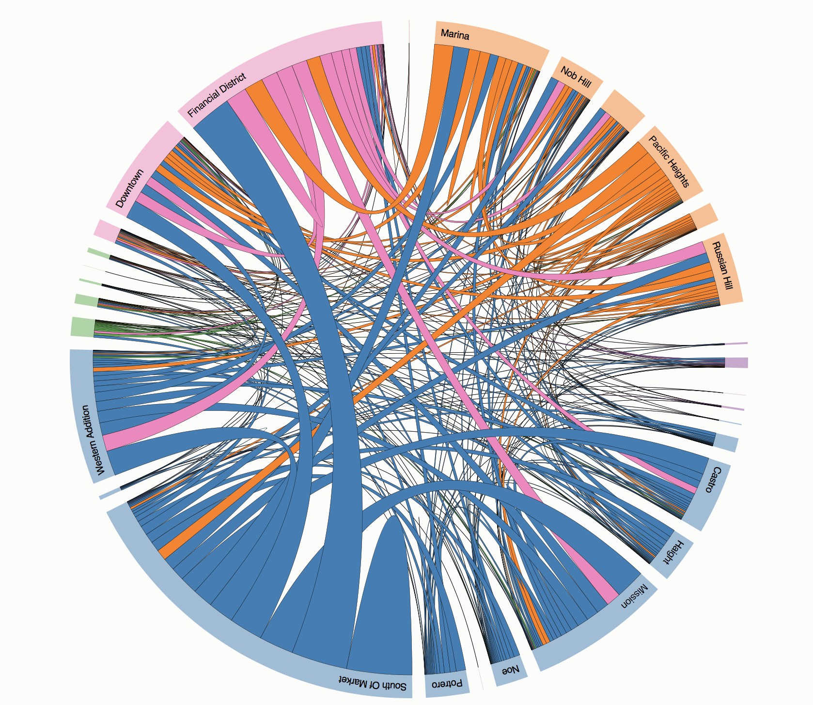

Description
Chord diagram is a type of data visualization that displays the inter-relationships between data. It is also known as radial network diagrams, and is often used for visualizing network flows or migration within a system.
Images & Examples
Image of chord diagram in the real world: the chord diagram somehow reminds me of yarn balls.

Here are some examples of chord diagrams:
The Global Flow of People

Uber Rides by Neighborhood

Types of Data
Chord diagram is suitable for data in the form of a squared matrix. A squared matrix is a two-dimensional collection of vectors with equal number of rows and columns.Chord diagram comprises a set of arcs that form a circle on the outside and a set of chords inside the circle.
The arcs of the circle represent vectors and the arc length is respectively determined by aggregating the values of vector elements. In other words, the circumference of the circle represents the sum of the entire matrix and is sub-divided into arcs for each vector.
The chords show relations between vectors in the matrix. When the size of matrix is small, it is possible to display chords as straight lines. However, when the size of the matrix is big, a hierarchical edge bundling technique would be needed to reduce the visual complexity of chords.
How to Build
There are a couple of tools to create chord diagrams.
D3.js - It’s possible to visualize chord diagrams using D3.js.
Circos - a software package to visualize data in a circular layout, including chord diagrams.
Schemaball – a software package that use circular composition to visualize structure of SQL database.
Advantages and Disadvantages
Chord diagram has great advantage in visualizing non-linear relations, especially networks. It is effective in revealing connections between objects or positions. As a circular diagram support a larger data domain than the square, the chord diagram could show more data within a given space on a page. Chord diagram is aesthetically pleasing, with its circular form and radial chords. The interactive chord diagram makes the data flow and works well with eye movement.
Chord diagram also comes with certain disadvantages. It is not meant for visualizing linear relations in the data. Chord diagram is not suitable for a static display; it works the best when the interface is interactive. While chord diagram could show spatial movement, it couldn’t show temporal progress.
History
The chord diagram gets its name from geometry where a chord of a circle is a straight-line segment with both endpoints lie on the circle.

The chord diagram started from the academic field where it has been extensively used in visualizing genomics. After a New York Times’s full-page infographic coverage, the chord diagram has seen its popularity grown and has been applied in a wide range of fields.